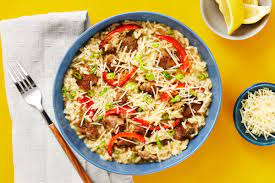

Pork Risotto

Description
A classic, slow cooking risotto recipe with salty pork and
tender bell pepper slices.
Ingredients
- 2 tsp chicken bullion
- 2 scallions
- 1 clove garlic
- 1 bell pepper
- 1 lemon
- 9 oz pork sausage
- 3/4 cup arborio rice
- 1tbsp italian seasoning
- 1/4 cup parmesan cheese
Steps
- Adjust rack to top position and preheat oven to 425 degrees.
In a medium pot, combine bullion and 4 cups water. Bring to
a simmer and reduce to low.
- Thinly slice scallions, separate whites from greens. Peel
and mince garlic. Halve, core and slice bell pepper 1/2 inch
thick strips. Quarter lemon.
- Heat a drizzle of olive oil in a large pan over medium-high
heat. Add sausage and cook, breaking meat into pieces until
browned and cooked through. Turn off heat and transfer to a
paper towel lined plate with a slotted spoon. Leave as much
oil in pan as possible.
- Heat pan with reserved oil over medium heat. Add scallion
whites, garlic, rice and 1/2 tsp italian seasoning. Cook,
stirring until whites are softened and rice is translucent.
Add 1/2 cup stock and stir.
- Repeat process with remaining stock adding 1/2 cup at a time.
Stirring until liquid has mostly absorbed, until rice is al
dente and mixture is creamy.
- Meanwhile, toss bell pepper on a baking sheet with a drizzle
of oil and italian seasoning as well as salt and pepper. Roast
until softened and lightly charred.
- Once risotto is done, stir in pork, bell pepper, half of
the parmesan and 2 tbsp of butter. Add a squeeze of lemon
juice to taste and season with salt and pepper. Serve and
enjoy!